Contents
Example: LTI model of a Coleman tranformed wind turbine system
close all; clear; clc;
LTI model of a Coleman tranformed wind turbine system
% LTI system matrices h = 0.1; % Sample time [OL,CL] = wtsLTI(h); % The wind turbine model n = size(OL.a,1); % The order of the system r = size(OL.b,2); % The number of inputs l = size(OL.c,1); % The number of outputs
Closed-loop identification experiment
Simulation of the model in closed loop
% Time sequence N = 10000; % number of data points t = (0:h:h*(N-1))'; % Wind disturbance signals d = 0.1*randn(N,3); % Excitation signal for pitch input r = [randn(N,1) zeros(N,2) 1e3.*randn(N,1) zeros(N,2)]; % Simulation of the closed-loop system y = lsim(CL,[d r],t); % Input and output selaction with scaling ui = detrend(y(:,7:8),'constant'); % selects input for identification (excitation of pitch + control) yi = detrend(y(:,1:3),'constant'); % selects output for identification ri = r; [us,Du,ys,Dy] = sigscale(ui,yi); % signal scaling % Defining a number of constants p = 50; % past window size f = 20; % future window size % PBSID-opt [S,x] = dordvarx(us,ys,f,p,'tikh','gcv'); figure, semilogy(S,'x'); title('Singular values') x = dmodx(x,n); [Ai,Bi,Ci,Di,Ki] = dx2abcdk(x,us,ys,f,p); Dat = iddata(ys',us',h); Mi = abcdk2idss(Dat,Ai,Bi,Ci,Di,Ki); % Variance-accounted-for (by Kalman filter) yest = predict(Mi,Dat); x0 = findstates(Mi,Dat); disp('VAF of identified system') vaf(ys,yest.y) % PBSID-opt (greybox) [S,x,xd,xs] = dordvarx_grey(us,ys,f,p,'tikh','gcv'); figure, semilogy(S,'x'); title('Singular values'); [x,R1,R2,R3] = dmodx_grey(x,xd,xs,n,5,7); figure, plot(R1,'*'); title('Canonical values between full state and deterministic only'); figure, plot(R2,'*'); title('Canonical values between full state and stochastic only'); figure, plot(R3,'*'); title('Canonical values between deterministic state and stochastic only'); [Ap,Bp,Cp,Dp,Kp] = dx2abcdk(x,us,ys,f,p); Dat = iddata(ys',us',h); Mp = abcdk2idss(Dat,Ap,Bp,Cp,Dp,Kp); % Variance-accounted-for (by Kalman filter) yest = predict(Mp,Dat); x0 = findstates(Mp,Dat); disp('VAF of identified system') vaf(ys,yest.y)
VAF of identified system ans = 99.9988 99.9885 99.9930 Warning: Y is not full rank. VAF of identified system ans = 99.9799 99.9872 99.9888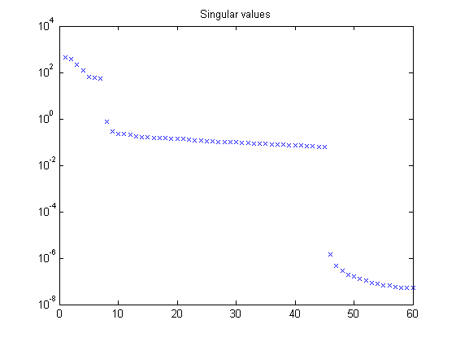 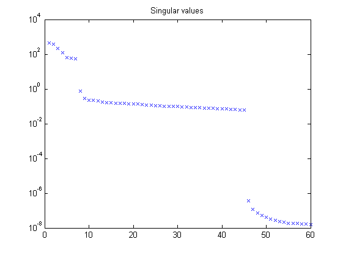 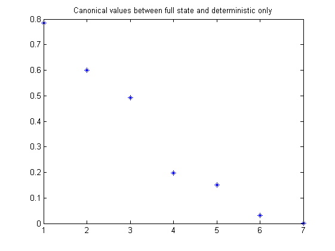 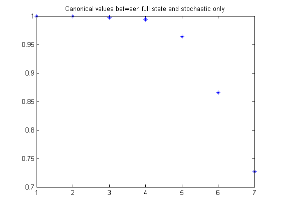 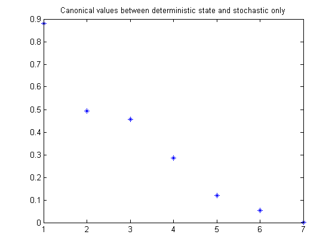
Identification results
% Plot eigenvalues figure hold on title('poles of identified LTI systems') [cx,cy] = pol2cart(linspace(0,2*pi),ones(1,100)); plot(cx,cy,'k'); plot(real(eig(OL.a)),imag(eig(OL.a)),'k+','LineWidth',0.1,'MarkerEdgeColor','k', 'MarkerFaceColor','k', 'MarkerSize',10); plot(real(eig(Mi.a)),imag(eig(Mi.a)),'rx'); plot(real(eig(Mp.a)),imag(eig(Mp.a)),'gx'); axis([-1 1 -1 1]); axis square legend('STABBND','TRUE','PBSID-opt','GREY','Location','West'); hold off % Bodediagram (open loop) OLi = ss(Mi); OLp = ss(Mp); OLi = Dy*OLi(1:3,1:2)*inv(Du); OLp = Dy*OLp(1:3,1:2)*inv(Du); figure, bodemag(OL(1,4),'k',OLi(1,1),'r',OLp(1,1),'g'); axis([0.01 100 -100 0]); legend('REAL','PBSID-opt','GREY','Location','SouthWest'); figure, bodemag(OL(1,7),'k',OLi(1,2),'r',OLp(1,2),'g'); axis([0.01 100 -200 -50]); legend('REAL','PBSID-opt','GREY','Location','SouthWest'); figure, bodemag(OL(2,4),'k',OLi(2,1),'r',OLp(2,1),'g'); axis([0.01 100 -100 50]); legend('REAL','PBSID-opt','GREY','Location','SouthWest'); figure, bodemag(OL(3,4),'k',OLi(3,1),'r',OLp(3,1),'g'); axis([0.01 100 -150 50]); legend('REAL','PBSID-opt','GREY','Location','SouthWest'); figure, bodemag(OL(3,7),'k',OLi(3,2),'r',OLp(3,2),'g'); axis([0.01 100 -200 0]); legend('REAL','PBSID-opt','GREY','Location','SouthWest');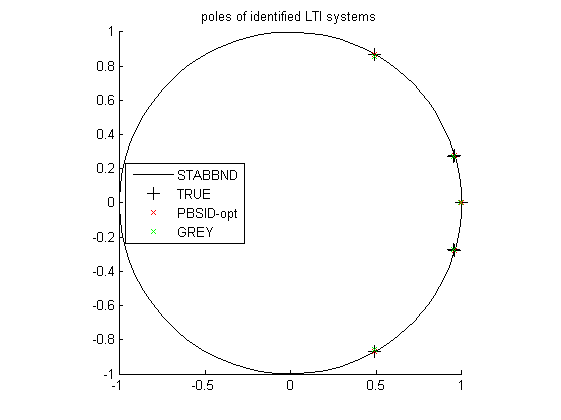 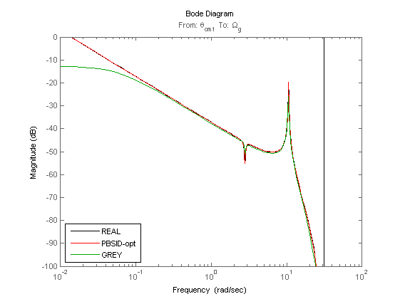 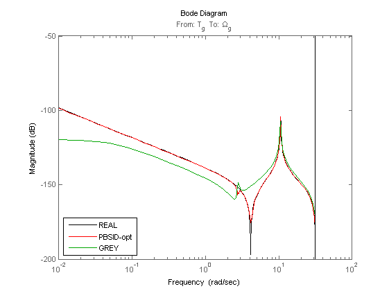 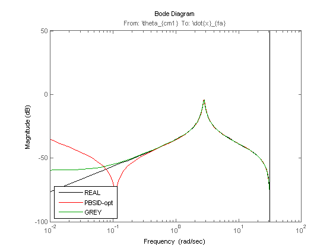 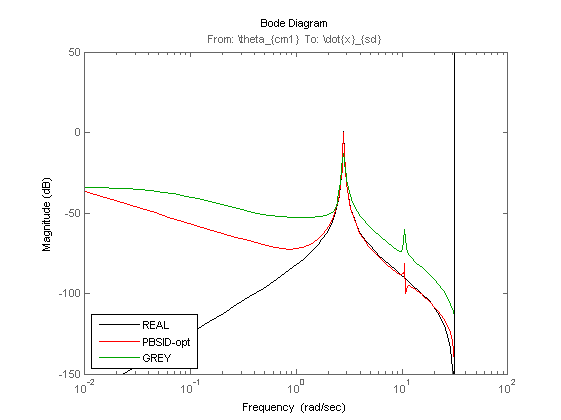 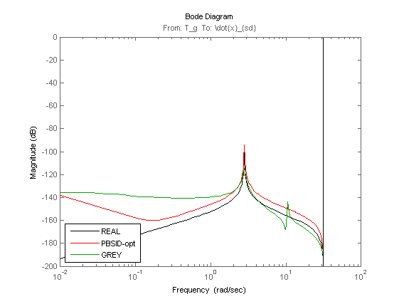